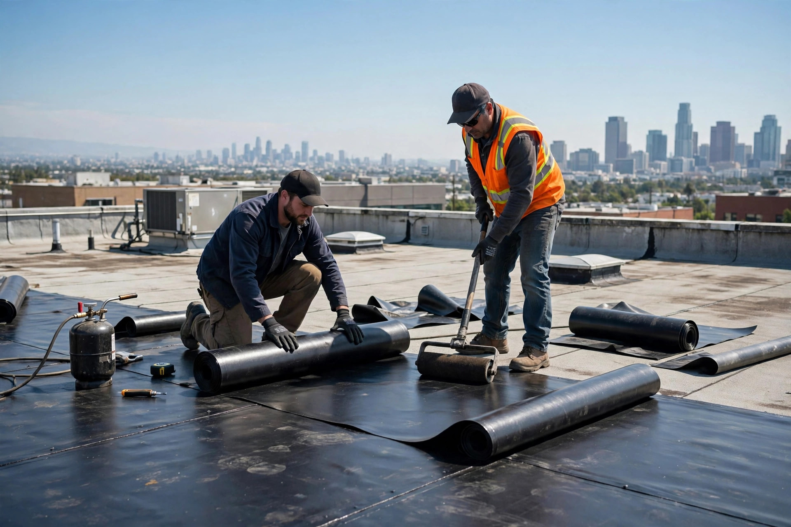
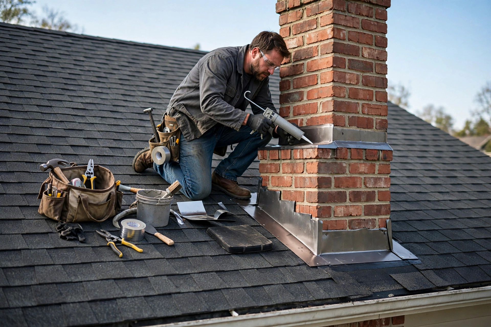

Bardeaux d'asphalte
Pose et remplacement de bardeaux d'asphalte — le classique qui dure.

Laval, QC · Couvreurs · Résidentiel, commercial et institutionnel
Bardeaux d'asphalte, membrane élastomère, toit en tôle, EPDM, TPO et membrane liquide — toitures en pente et toits plats. Réparation et inspection à Laval. Résidentiel, commercial et institutionnel.
Inspection de toit
Inspection, réparation et rénovation de toiture à Laval. Un appel et on se déplace.
Ce que nous faisons
Pose et remplacement de bardeaux d'asphalte — le classique qui dure.
Membranes élastomère pour toits plats — une étanchéité durable.
Toiture en tôle résistante et durable — résidentiel, commercial et institutionnel.
Membranes monocouches EPDM et TPO pour toits plats et grandes surfaces.
Membrane liquide pour réparations ciblées et étanchéité des détails.
Inspection de toiture, détection d'infiltrations et réparations de tout genre.

Pourquoi nous choisir
Un toit, ça protège tout ce qui est en dessous. On travaille proprement et on vous explique ce qu'on fait, avant et pendant le chantier.
Nos chantiers


Contact direct
Bon à savoir
Bardeaux d'asphalte, membrane élastomère, toit en tôle, EPDM, TPO et membrane liquide — toitures en pente comme toits plats.
Oui — maisons, immeubles, bâtiments commerciaux et institutionnels, à Laval et les environs.
Oui — inspection, détection d'infiltrations et réparations de tout genre. Appelez le 514 755-8648 pour prendre rendez-vous.
Oui — licence RBQ 8344-8134-33.
Appelez-nous